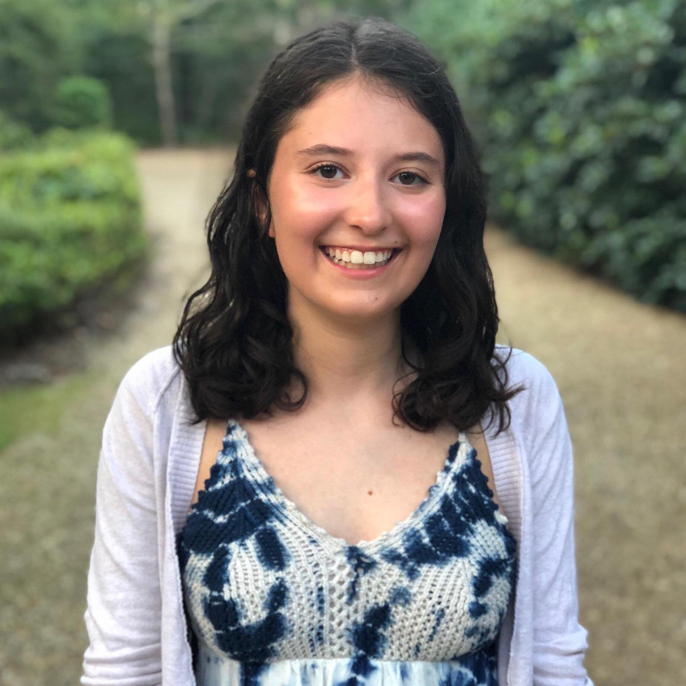

W.in Debate is a free mentoring service that provides mentees with the opportunity to refine their debating skills in a space where they feel both comfortable and safe, while building long-lasting relationships with positive role models. Founded on the principle of women supporting women, our program seeks to create a support system for younger women involved in Lincoln-Douglas Debate, a male-dominated activity. We believe that competitive success shouldn’t come at the expense of a woman’s safety and wellbeing, and we hope to foster an environment where both are possible.
Lindsey Perlman: Editor-in-Chief | Byram Hills High School

Lindsey is a rising senior from New York. Her experiences with sexism in the debate activity motivated her to create W.in debate in the hopes that it would prevent the same discrimination from happening to younger women. Lindsey is grateful to have had older women role models throughout her time in the activity to guide and encourage her, and she hopes that W.in debate will provide other young women with a similar support system. Lindsey is excited to play a role in creating an empowering space for women through the W.in debate platform!
Claire Liu: Web Developer | Stuyvesant High School

Claire is a rising senior at Stuyvesant High School in New York City. After three years of debate, she recognized the value in forming relations with other women in the community. Compounded with the pervasiveness of sexism she experienced at debate camp, she decided to help in developing W.in debate. Throughout her career, Claire has been appreciative of the strength of women leadership on the Stuyvesant LD team. She hopes that W.in debate will provide them with the same resources and connections that she’s been able to have.
Julia Wu: Program Development | Lake Highland Preparatory

Julia Wu is a senior at Lake Highland Preparatory School in Florida. After being in debate for several years, she has found that having positive older role models and being surrounded by other girls has been one of the greatest support systems. She started W.in Debate because she believes that womxn debaters on every team (regardless of size, resources, gender disparities) should have the ability to form close relationships with other womxn in the activity. She is looking forward to working with the mentees at W.in Debate to help them have a more fulfilling debate experience! She enjoys reading phil, Ks, theory, and topicality including authors like Rosi Bradotti.
Amy Pu: Web Developer | Brown University
Amy is a rising sophomore at Brown University. She debated throughout high school and now debates as a part of the Brown Debating Union. She was astonished to find the distinct efforts in inclusion and diversity from the college debating circuit, realizing the rampant sexism she experienced should not be passively accepted. She truly appreciates the close friendships she currently has with older female mentors. Pursuing a career in computer science, she hopes to use what she's learned to bridge the gaps facing other debaters today.
Our adult sponsors are highly experienced and educated individuals dedicated to helping women and other marginalized groups in debate. They have worked with Lincoln-Douglas debaters before and were once competitors themselves, which gives them unique insight into how to guide our program. They oversee the functioning of our program and ensure the safety of all of our mentees.
Becca Traber | Yale University
Becca is a coach for Lake Highland Prep as well for several independent students. As a debater for the Kinkaid School, she earned eleven career TOC bids, won Berkeley and was a finalist at TFA state tournament and the TOC. As a coach, she has coached 14 students to the TOC and 4 students to TOC outrounds. At invitational tournaments, her students have accumulated over 40 TOC bids. Outside of debate, Becca is a PhD candidate at Yale University in political science, specializing in political theory. Her research is at the intersection of deliberative democracy, the study of social movements, and the philosophy of race and gender.
Zoë Ewing | Columbia University
Zoë debated for Scarsdale High School and is now the head Lincoln-Douglas coach at Byram Hills High School. She joined debate to gain self-confidence and find an outlet for her competitive personality, but through debate, she also discovered her interest in philosophy and met many of her best friends. She received 9 career bids to the TOC and won or reached finals at the New York State Championship, Princeton (twice), Columbia, Bronx, the Valley Round Robin, and the Hockaday Round Robin. She now attends Columbia University. You can find her at many Northeast bid tournaments during the year!
Mina Lee | Princeton University
Mina is thrilled to be a part of W.in Debate. She believes that having a strong support system in debate is vital, and she is excited to contribute. If it hadn’t been for other strong womxn in the community, she would not have been able to see her debate career through to the end of senior year. She would love more than anything to help be a part of that support system for other young womxn in the community.
Logan Reed | New York University
Logan competed in LD debate for three years for North Crowley High School in Texas. She qualified to TFA state twice, and received 3 bids to the TOC. In her senior year, she won St. James and was a finalist at Strake. She currently is a first-year college policy debater at NYU, where she has reached elimination rounds of several tournaments in both open and JV divisions. She also coaches several independent debaters across the country. Her debate interests include the intersection of race and queerness, (trans)gender studies, disability studies, and postmodern philosophy.